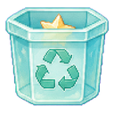

跳到桌面
跳过启动
DOISH HOME OS
Memory Build 2009.08
Start_Here
AI_Gallery
UI_Studio
Product_Lab
Art_Corner
About_Me.txt
Logic_Terminal
Memory_Pool
我的简历
联系我

回收站
AGENT · SCANNING
♪
☀
00:00
D
狗鱼
doish · AI 产品 × AIGC × 交互设计
Start Here
90 秒总览
Product Lab
Agent / 意图 / 评价体系
AI Gallery
生成系统与视觉实验
UI Studio
界面与交互设计
Art Corner
一些只负责被记住的画面
⌕
关于我
我的简历
联系我
Logic Terminal
记忆档案
重新启动这段记忆
用 90 秒认识我
进入回忆模式
刷新这片天空
关于这台电脑
×